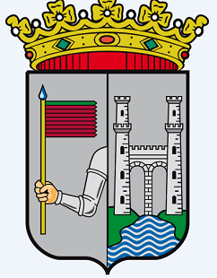

Indice de los pueblos

Sergio Alonso de Dios 23/2/2021
¡Bienvenidos a mi pagina web!
En esta pagina hablaremos sobre Zamora y algunos de sus pueblos y nos centreremos en el turismo, la fauna, tradiciones,etc
Se cree que los primeros pobladores de Zamora fueron los vacceos, que la llamaron Ocalam. Sin embargo, la ciudad empezó a tener importancia con la llegada de los romanos, que cambiaron el nombre por el de Ocellum Durii (los ojos del Duero), y la hicieron parte del recorrido de la Vía de la Plata. Fue en la época romana cuando vivió una de las figuras históricas más vinculadas con la ciudad: Viriato. Este pastor lusitense se convirtió en uno de los guerreros más temibles de la zona y luchó contra los invasores, ganándoles en ocho ocasiones, que están representadas en las franjas rojas de la Seña Bermeja, la bandera que aparece en el escudo de Zamora.
En el siglo VIII, con la llegada de los árabes, la ciudad volvió a cambiar de nombre y pasó a llamarse Azemur (olivar silvestre) y Samurah (ciudad de las turquesas). A finales del siglo IX Alfonso III, el Magno, la recuperó y la fortificó, aunque las murallas no pudieron evitar que fuera tomada por Almanzor en el siglo siguiente. Unos años después, en el siglo XI, Fernando I de Castilla la repobló y reedificó. A su muerte, legó todas sus posesiones a sus hijos, quedando Zamora al mando de una de sus hijas, Doña Urraca. El hermano de Urraca, Sancho II, no quedó conforme con el reparto y, tras emprender guerras contra sus otros hermanos, sitió Zamora, que resistió durante siete largos meses gracias a la fortaleza de sus murallas, en lo que se ha dado en llamar el Cerco de Zamora. El asedio terminó con la muerte de Sancho a manos de Bellido Dolfos. De este episodio histórico procede el dicho de "Zamora no se conquistó en una hora".
Durante el siglo XII la ciudad vivió una época de esplendor en la que se construyeron la mayoría de los edificios románicos de los que hoy presume. El siglo XIII fue, en cambio, un momento de mayor tranquilidad. La ciudad vuelve a tener su importancia en el siglo XV, con las luchas de poder entre Isabel la Católica y Juana la Beltraneja y las guerras con Portugal. Ya en el siglo XIX, concretamente durante la Guerra de la Independencia, las tropas francesas ocuparon la ciudad durante tres años. Esto supuso que se perdiera parte del patrimonio artístico y monumental, aunque a finales del siglo XIX y principios del XX, Zamora vive un nuevo período de esplendor arquitectónico durante el que se construyen los fantásticos edificios modernistas gracias a los que hoy en día forma parte de la Ruta europea del Modernismo.

Aqui teneis un pequeño documental de Zamora: